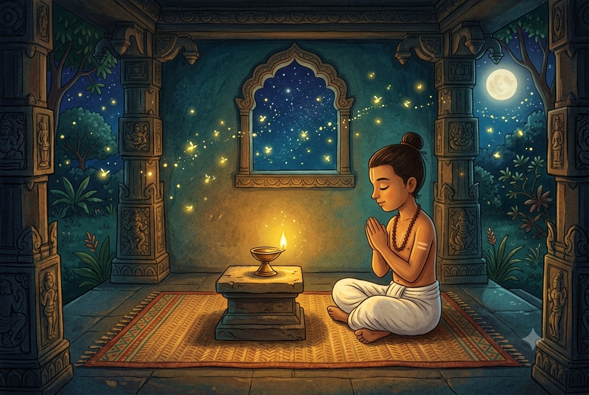
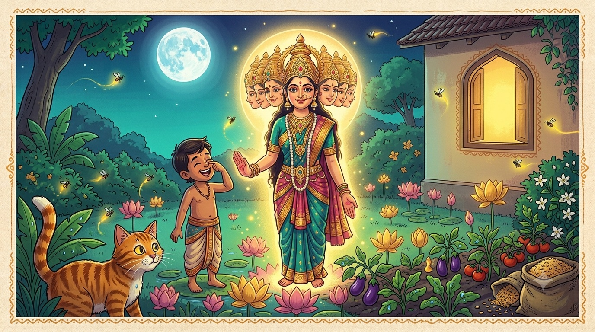

Tale OneThe Gift of Goddess Kali
“Courage and a good laugh, together, can charm even a goddess.”
When Rama was a boy, he was clever, but he was also poor — and, if we are being truthful, a little bit naughty. He had no fancy school and no rich teacher. What he did have was a bold heart and a grin that would not sit still.
One day a wandering holy man passed through the town and took a liking to the bright-eyed boy. "Listen closely," said the old man. "I will teach you a secret prayer. Go to the temple of the great Goddess Kali, and say it over and over through the whole night without stopping. If your heart is brave and true, the Goddess herself may appear and grant you a gift." Then he pressed the words into Rama's ear and went on his way.

A gentle, glowing children's-book illustration in South-Indian folk-art style: a brave young boy of about ten sitting cross-legged inside a small stone temple at night, eyes closed in prayer, a single little brass oil lamp casting warm golden light and soft shadows. Fireflies and stars in the dark blue sky outside the temple arch. Peaceful, cosy and not scary. Warm jewel tones, no text baked into the image. Target size ~1200×800px, 3:2 landscape; keep the boy and lamp centred with safe margins — the art is letterboxed into a 3:2 box, so keep nothing important near the edges.
Generate this with your image agent, then drop the file here.
So Rama went. He sat before the shrine with a tiny oil lamp, closed his eyes, and said the prayer. Once. Twice. A hundred times. A thousand times. The moon crossed the sky. His voice grew soft, but he did not stop — not once, not for a moment.
The Goddess appears
And then, just before dawn, the little lamp flared bright as the sun. The air filled with the smell of jasmine, and there stood the Goddess Kali herself — glowing, magnificent, and wearing a great many faces at once, each one looking at Rama with shining eyes.
Now, a grown poet might have fainted. A brave soldier might have run. But little Rama looked up at all those wonderful faces — and burst out laughing!
"O Mother!" giggled Rama, before he could stop himself. "Forgive me — but I have only one little nose, and when I catch a cold in the rainy season I can barely keep it wiped with two hands! You have so very many noses, Mother. Whatever will you do when you catch a cold?"

A magical but friendly children's-book illustration in South-Indian folk-art style: a radiant, kindly goddess glowing with golden light, shown with several gentle smiling faces arranged in a soft halo (wondrous, warm, and not frightening — suitable for young children), reaching a blessing hand toward a small boy who stands laughing happily, unafraid, one hand on his own nose as if joking. Lots of golden glow, lotus flowers, jewel tones of teal and marigold and rose. No text baked into the image. Target size ~1280×720px, 16:9 landscape; keep the goddess and boy centred with safe margins — the art is letterboxed into a 16:9 box, so keep nothing important near the edges.
Generate this with your image agent, then drop the file here.
For a heartbeat, no one breathed. And then the Goddess herself began to laugh — a warm, thundering, delighted laugh that shook the little lamp's flame. "In all my long years," she said, wiping a happy tear from one of her eyes, "no one has ever dared to tease me. You are not only brave, little one. You are funny. And a joke told at the right moment is a rare and precious thing."
The blessing
The Goddess held out two bowls. "Choose," she said. "In this hand, riches — gold enough to fill a palace. In the other, wisdom — a mind sharper than any in the land. Which will you have?"
Rama thought only for a moment. "Mother," he said, "gold gets spent and is gone. But a clever mind I can never lose, and with it I might earn the gold besides. I will take the wisdom, please." The Goddess smiled her widest smile. She was so pleased with his fearless heart and his quick, laughing tongue that she gave him a special name to carry all his life: Vikatakavi — the jester poet, the one who is wise and funny at the very same time.
A brave heart and a good sense of humour can carry you through moments that would frighten anyone else. And when you are offered a choice, choose the gift that no one can ever take away from you — a clever, kind mind.
And that, dear reader, is how a poor, giggling boy became the great Tenali Raman. From that night on, he was never at a loss for a clever answer — as our next four tales will happily prove.